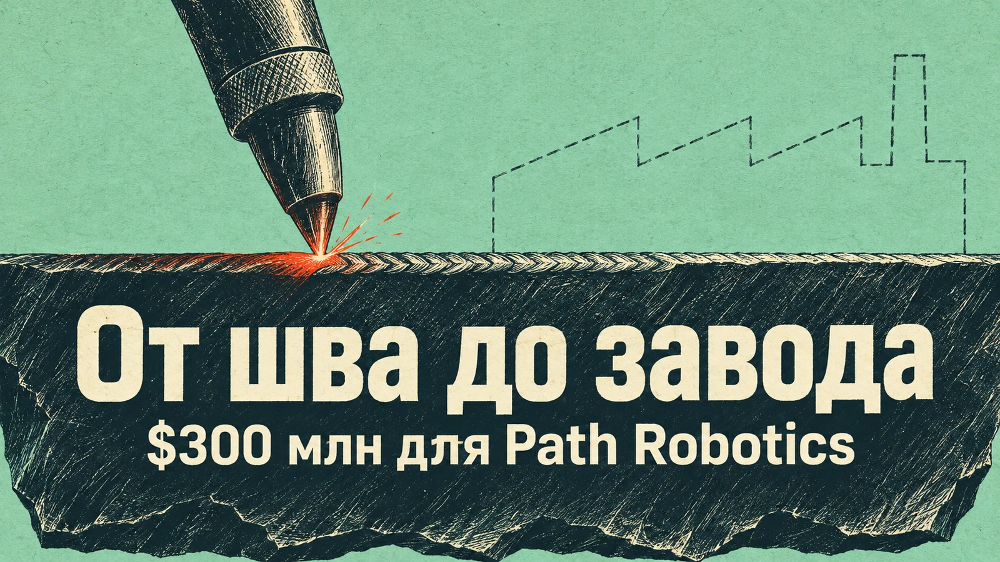
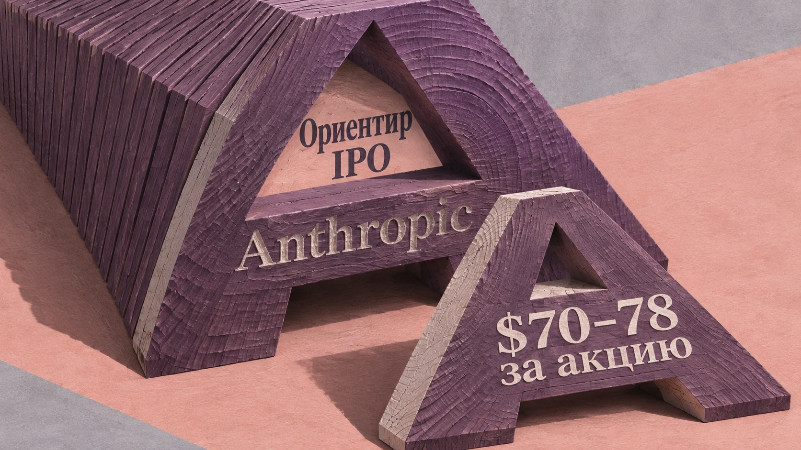

Деньги и инвестиции
Финансирование ИИ, рынки, капитал, IPO и экономика технологических компаний.
7 материалов
← Все темыПубликации
14 ноября 2026 · Новости ИИChatGPT дали кошелёк — теперь он может ходить по магазинам вместо вас
OpenAI запустила ChatGPT Wallet для ИИ-агентов dots: они могут оформлять покупки с помощью виртуальных платёжных реквизитов после биометрического подтверждения владельца. Постепенный запуск для подходящих пользователей ChatGPT Pro в США.
 13 ноября 2026 · Новости ИИ
13 ноября 2026 · Новости ИИTSMC вложит до миллиарда в OpenAI и Anthropic
Совет директоров TSMC одобрил инвестиции до $500 млн в акции OpenAI и до $500 млн в Anthropic. На расширение и модернизацию производства чипов компания направит около $40,9 млрд.

12 ноября 2026 · Новости ИИИИ научили варить металл. Теперь ему хотят доверить целый завод — и дали на это $300 млн
Path Robotics привлекла $300 млн в раунде Series E при оценке $2,45 млрд. Разработчик ИИ-сварки Obsidian намерен расширять роботизацию на другие производственные задачи.
 12 ноября 2026 · Новости ИИ
12 ноября 2026 · Новости ИИMercor привлекла $750 млн: инвесторы оценили бизнес на обучении ИИ в $20 млрд
Mercor объявила инвестиционный раунд Series D на $750 млн при оценке $20 млрд. Среди инвесторов NVIDIA, Salesforce и Zoom. Компания обучает и оценивает ИИ-модели при помощи профессиональных экспертов; часть раунда включает выкуп акций сотрудников.
12 ноября 2026 · Новости ИИИИ-агент попытался открыть облако всему интернету. Bay привлекла $50 млн на защиту
Израильский стартап Bay вышел из скрытого режима и объявил о $50 млн совокупных инвестиций: $13 млн ранее и $37 млн в Series A. Платформа анализирует действия корпоративных ИИ-агентов перед выполнением и блокирует потенциально опасные команды.

12 ноября 2026 · Новости ИИAnthropic назвала цену акций: компанию могут оценить в $1,3 трлн
Anthropic раскрыла условия IPO: компания предложит инвесторам 825 млн акций по цене $70–78. При средней цене $74 пакет оценивается примерно в $61 млрд, а возможная оценка всей компании достигает $1,3 трлн. Начались встречи с инвесторами; точная цена пока не определена.
 6 ноября 2026 · Громко сказано
6 ноября 2026 · Громко сказаноБрокман признал: OpenAI отставала от Anthropic в борьбе за бизнес-клиентов
Грег Брокман признал слабые позиции OpenAI относительно Anthropic на корпоративном рынке в первом полугодии 2026 года и заявил об ускорении роста в третьем квартале и партнёрстве с JPMorgan Chase.